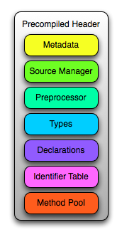

Precompiled Header and Modules Internals
This document describes the design and implementation of Clang's precompiled headers (PCH) and modules. If you are interested in the end-user view, please see the User's Manual.
Table of Contents
- Using Precompiled Headers with clang
- Design Philosophy
- Serialized AST File Contents
- AST Reader Integration Points
- Chained precompiled headers
- Modules
Using Precompiled Headers with clang
The Clang compiler frontend, clang -cc1, supports two command line options for generating and using PCH files.
To generate PCH files using clang -cc1, use the option -emit-pch:
$ clang -cc1 test.h -emit-pch -o test.h.pch
This option is transparently used by clang when generating PCH files. The resulting PCH file contains the serialized form of the compiler's internal representation after it has completed parsing and semantic analysis. The PCH file can then be used as a prefix header with the -include-pch option:
$ clang -cc1 -include-pch test.h.pch test.c -o test.s
Design Philosophy
Precompiled headers are meant to improve overall compile times for projects, so the design of precompiled headers is entirely driven by performance concerns. The use case for precompiled headers is relatively simple: when there is a common set of headers that is included in nearly every source file in the project, we precompile that bundle of headers into a single precompiled header (PCH file). Then, when compiling the source files in the project, we load the PCH file first (as a prefix header), which acts as a stand-in for that bundle of headers.
A precompiled header implementation improves performance when:
- Loading the PCH file is significantly faster than re-parsing the bundle of headers stored within the PCH file. Thus, a precompiled header design attempts to minimize the cost of reading the PCH file. Ideally, this cost should not vary with the size of the precompiled header file.
- The cost of generating the PCH file initially is not so large that it counters the per-source-file performance improvement due to eliminating the need to parse the bundled headers in the first place. This is particularly important on multi-core systems, because PCH file generation serializes the build when all compilations require the PCH file to be up-to-date.
Modules, as implemented in Clang, use the same mechanisms as precompiled headers to save a serialized AST file (one per module) and use those AST modules. From an implementation standpoint, modules are a generalization of precompiled headers, lifting a number of restrictions placed on precompiled headers. In particular, there can only be one precompiled header and it must be included at the beginning of the translation unit. The extensions to the AST file format required for modules are discussed in the section on modules.
Clang's AST files are designed with a compact on-disk representation, which minimizes both creation time and the time required to initially load the AST file. The AST file itself contains a serialized representation of Clang's abstract syntax trees and supporting data structures, stored using the same compressed bitstream as LLVM's bitcode file format.
Clang's AST files are loaded "lazily" from disk. When an AST file is initially loaded, Clang reads only a small amount of data from the AST file to establish where certain important data structures are stored. The amount of data read in this initial load is independent of the size of the AST file, such that a larger AST file does not lead to longer AST load times. The actual header data in the AST file--macros, functions, variables, types, etc.--is loaded only when it is referenced from the user's code, at which point only that entity (and those entities it depends on) are deserialized from the AST file. With this approach, the cost of using an AST file for a translation unit is proportional to the amount of code actually used from the AST file, rather than being proportional to the size of the AST file itself.
When given the -print-stats option, Clang produces
statistics describing how much of the AST file was actually
loaded from disk. For a simple "Hello, World!" program that includes
the Apple Cocoa.h header (which is built as a precompiled
header), this option illustrates how little of the actual precompiled
header is required:
*** PCH Statistics: 933 stat cache hits 4 stat cache misses 895/39981 source location entries read (2.238563%) 19/15315 types read (0.124061%) 20/82685 declarations read (0.024188%) 154/58070 identifiers read (0.265197%) 0/7260 selectors read (0.000000%) 0/30842 statements read (0.000000%) 4/8400 macros read (0.047619%) 1/4995 lexical declcontexts read (0.020020%) 0/4413 visible declcontexts read (0.000000%) 0/7230 method pool entries read (0.000000%) 0 method pool misses
For this small program, only a tiny fraction of the source locations, types, declarations, identifiers, and macros were actually deserialized from the precompiled header. These statistics can be useful to determine whether the AST file implementation can be improved by making more of the implementation lazy.
Precompiled headers can be chained. When you create a PCH while including an existing PCH, Clang can create the new PCH by referencing the original file and only writing the new data to the new file. For example, you could create a PCH out of all the headers that are very commonly used throughout your project, and then create a PCH for every single source file in the project that includes the code that is specific to that file, so that recompiling the file itself is very fast, without duplicating the data from the common headers for every file. The mechanisms behind chained precompiled headers are discussed in a later section.
AST File Contents
Clang's AST files are organized into several different blocks, each of which contains the serialized representation of a part of Clang's internal representation. Each of the blocks corresponds to either a block or a record within LLVM's bitstream format. The contents of each of these logical blocks are described below.
For a given AST file, the llvm-bcanalyzer
utility can be used to examine the actual structure of the bitstream
for the AST file. This information can be used both to help
understand the structure of the AST file and to isolate
areas where AST files can still be optimized, e.g., through
the introduction of abbreviations.
Metadata Block
The metadata block contains several records that provide information about how the AST file was built. This metadata is primarily used to validate the use of an AST file. For example, a precompiled header built for a 32-bit x86 target cannot be used when compiling for a 64-bit x86 target. The metadata block contains information about:
- Language options
- Describes the particular language dialect used to compile the
AST file, including major options (e.g., Objective-C support) and more
minor options (e.g., support for "//" comments). The contents of this
record correspond to the
LangOptionsclass. - Target architecture
- The target triple that describes the architecture, platform, and
ABI for which the AST file was generated, e.g.,
i386-apple-darwin9. - AST version
- The major and minor version numbers of the AST file format. Changes in the minor version number should not affect backward compatibility, while changes in the major version number imply that a newer compiler cannot read an older precompiled header (and vice-versa).
- Original file name
- The full path of the header that was used to generate the AST file.
- Predefines buffer
- Although not explicitly stored as part of the metadata, the
predefines buffer is used in the validation of the AST file.
The predefines buffer itself contains code generated by the compiler
to initialize the preprocessor state according to the current target,
platform, and command-line options. For example, the predefines buffer
will contain "
#define __STDC__ 1" when we are compiling C without Microsoft extensions. The predefines buffer itself is stored within the source manager block, but its contents are verified along with the rest of the metadata.
A chained PCH file (that is, one that references another PCH) and a module (which may import other modules) have additional metadata containing the list of all AST files that this AST file depends on. Each of those files will be loaded along with this AST file.
For chained precompiled headers, the language options, target architecture and predefines buffer data is taken from the end of the chain, since they have to match anyway.
Source Manager Block
The source manager block contains the serialized representation of Clang's SourceManager class, which handles the mapping from source locations (as represented in Clang's abstract syntax tree) into actual column/line positions within a source file or macro instantiation. The AST file's representation of the source manager also includes information about all of the headers that were (transitively) included when building the AST file.
The bulk of the source manager block is dedicated to information about the various files, buffers, and macro instantiations into which a source location can refer. Each of these is referenced by a numeric "file ID", which is a unique number (allocated starting at 1) stored in the source location. Clang serializes the information for each kind of file ID, along with an index that maps file IDs to the position within the AST file where the information about that file ID is stored. The data associated with a file ID is loaded only when required by the front end, e.g., to emit a diagnostic that includes a macro instantiation history inside the header itself.
The source manager block also contains information about all of the
headers that were included when building the AST file. This
includes information about the controlling macro for the header (e.g.,
when the preprocessor identified that the contents of the header
dependent on a macro like LLVM_CLANG_SOURCEMANAGER_H)
along with a cached version of the results of the stat()
system calls performed when building the AST file. The
latter is particularly useful in reducing system time when searching
for include files.
Preprocessor Block
The preprocessor block contains the serialized representation of the preprocessor. Specifically, it contains all of the macros that have been defined by the end of the header used to build the AST file, along with the token sequences that comprise each macro. The macro definitions are only read from the AST file when the name of the macro first occurs in the program. This lazy loading of macro definitions is triggered by lookups into the identifier table.
Types Block
The types block contains the serialized representation of all of
the types referenced in the translation unit. Each Clang type node
(PointerType, FunctionProtoType, etc.) has a
corresponding record type in the AST file. When types are deserialized
from the AST file, the data within the record is used to
reconstruct the appropriate type node using the AST context.
Each type has a unique type ID, which is an integer that uniquely
identifies that type. Type ID 0 represents the NULL type, type IDs
less than NUM_PREDEF_TYPE_IDS represent predefined types
(void, float, etc.), while other
"user-defined" type IDs are assigned consecutively from
NUM_PREDEF_TYPE_IDS upward as the types are encountered.
The AST file has an associated mapping from the user-defined types
block to the location within the types block where the serialized
representation of that type resides, enabling lazy deserialization of
types. When a type is referenced from within the AST file, that
reference is encoded using the type ID shifted left by 3 bits. The
lower three bits are used to represent the const,
volatile, and restrict qualifiers, as in
Clang's QualType
class.
Declarations Block
The declarations block contains the serialized representation of
all of the declarations referenced in the translation unit. Each Clang
declaration node (VarDecl, FunctionDecl,
etc.) has a corresponding record type in the AST file. When
declarations are deserialized from the AST file, the data
within the record is used to build and populate a new instance of the
corresponding Decl node. As with types, each declaration
node has a numeric ID that is used to refer to that declaration within
the AST file. In addition, a lookup table provides a mapping from that
numeric ID to the offset within the precompiled header where that
declaration is described.
Declarations in Clang's abstract syntax trees are stored
hierarchically. At the top of the hierarchy is the translation unit
(TranslationUnitDecl), which contains all of the
declarations in the translation unit but is not actually written as a
specific declaration node. Its child declarations (such as
functions or struct types) may also contain other declarations inside
them, and so on. Within Clang, each declaration is stored within a declaration
context, as represented by the DeclContext class.
Declaration contexts provide the mechanism to perform name lookup
within a given declaration (e.g., find the member named x
in a structure) and iterate over the declarations stored within a
context (e.g., iterate over all of the fields of a structure for
structure layout).
In Clang's AST file format, deserializing a declaration
that is a DeclContext is a separate operation from
deserializing all of the declarations stored within that declaration
context. Therefore, Clang will deserialize the translation unit
declaration without deserializing the declarations within that
translation unit. When required, the declarations stored within a
declaration context will be deserialized. There are two representations
of the declarations within a declaration context, which correspond to
the name-lookup and iteration behavior described above:
- When the front end performs name lookup to find a name
xwithin a given declaration context (for example, during semantic analysis of the expressionp->x, wherep's type is defined in the precompiled header), Clang refers to an on-disk hash table that maps from the names within that declaration context to the declaration IDs that represent each visible declaration with that name. The actual declarations will then be deserialized to provide the results of name lookup. - When the front end performs iteration over all of the declarations within a declaration context, all of those declarations are immediately de-serialized. For large declaration contexts (e.g., the translation unit), this operation is expensive; however, large declaration contexts are not traversed in normal compilation, since such a traversal is unnecessary. However, it is common for the code generator and semantic analysis to traverse declaration contexts for structs, classes, unions, and enumerations, although those contexts contain relatively few declarations in the common case.
Statements and Expressions
Statements and expressions are stored in the AST file in both the types and the declarations blocks, because every statement or expression will be associated with either a type or declaration. The actual statement and expression records are stored immediately following the declaration or type that owns the statement or expression. For example, the statement representing the body of a function will be stored directly following the declaration of the function.
As with types and declarations, each statement and expression kind
in Clang's abstract syntax tree (ForStmt,
CallExpr, etc.) has a corresponding record type in the
AST file, which contains the serialized representation of
that statement or expression. Each substatement or subexpression
within an expression is stored as a separate record (which keeps most
records to a fixed size). Within the AST file, the
subexpressions of an expression are stored, in reverse order, prior to the expression
that owns those expression, using a form of Reverse
Polish Notation. For example, an expression 3 - 4 + 5
would be represented as follows:
IntegerLiteral(5) |
IntegerLiteral(4) |
IntegerLiteral(3) |
BinaryOperator(-) |
BinaryOperator(+) |
| STOP |
When reading this representation, Clang evaluates each expression
record it encounters, builds the appropriate abstract syntax tree node,
and then pushes that expression on to a stack. When a record contains N
subexpressions--BinaryOperator has two of them--those
expressions are popped from the top of the stack. The special STOP
code indicates that we have reached the end of a serialized expression
or statement; other expression or statement records may follow, but
they are part of a different expression.
Identifier Table Block
The identifier table block contains an on-disk hash table that maps
each identifier mentioned within the AST file to the
serialized representation of the identifier's information (e.g, the
IdentifierInfo structure). The serialized representation
contains:
- The actual identifier string.
- Flags that describe whether this identifier is the name of a built-in, a poisoned identifier, an extension token, or a macro.
- If the identifier names a macro, the offset of the macro definition within the preprocessor block.
- If the identifier names one or more declarations visible from translation unit scope, the declaration IDs of these declarations.
When an AST file is loaded, the AST file reader
mechanism introduces itself into the identifier table as an external
lookup source. Thus, when the user program refers to an identifier
that has not yet been seen, Clang will perform a lookup into the
identifier table. If an identifier is found, its contents (macro
definitions, flags, top-level declarations, etc.) will be
deserialized, at which point the corresponding
IdentifierInfo structure will have the same contents it
would have after parsing the headers in the AST file.
Within the AST file, the identifiers used to name declarations are represented with an integral value. A separate table provides a mapping from this integral value (the identifier ID) to the location within the on-disk hash table where that identifier is stored. This mapping is used when deserializing the name of a declaration, the identifier of a token, or any other construct in the AST file that refers to a name.
Method Pool Block
The method pool block is represented as an on-disk hash table that
serves two purposes: it provides a mapping from the names of
Objective-C selectors to the set of Objective-C instance and class
methods that have that particular selector (which is required for
semantic analysis in Objective-C) and also stores all of the selectors
used by entities within the AST file. The design of the
method pool is similar to that of the identifier
table: the first time a particular selector is formed during the
compilation of the program, Clang will search in the on-disk hash
table of selectors; if found, Clang will read the Objective-C methods
associated with that selector into the appropriate front-end data
structure (Sema::InstanceMethodPool and
Sema::FactoryMethodPool for instance and class methods,
respectively).
As with identifiers, selectors are represented by numeric values within the AST file. A separate index maps these numeric selector values to the offset of the selector within the on-disk hash table, and will be used when de-serializing an Objective-C method declaration (or other Objective-C construct) that refers to the selector.
AST Reader Integration Points
The "lazy" deserialization behavior of AST files requires their integration into several completely different submodules of Clang. For example, lazily deserializing the declarations during name lookup requires that the name-lookup routines be able to query the AST file to find entities stored there.
For each Clang data structure that requires direct interaction with
the AST reader logic, there is an abstract class that provides
the interface between the two modules. The ASTReader
class, which handles the loading of an AST file, inherits
from all of these abstract classes to provide lazy deserialization of
Clang's data structures. ASTReader implements the
following abstract classes:
StatSysCallCache- This abstract interface is associated with the
FileManagerclass, and is used whenever the file manager is going to perform astat()system call. ExternalSLocEntrySource- This abstract interface is associated with the
SourceManagerclass, and is used whenever the source manager needs to load the details of a file, buffer, or macro instantiation. IdentifierInfoLookup- This abstract interface is associated with the
IdentifierTableclass, and is used whenever the program source refers to an identifier that has not yet been seen. In this case, the AST reader searches for this identifier within its identifier table to load any top-level declarations or macros associated with that identifier. ExternalASTSource- This abstract interface is associated with the
ASTContextclass, and is used whenever the abstract syntax tree nodes need to loaded from the AST file. It provides the ability to de-serialize declarations and types identified by their numeric values, read the bodies of functions when required, and read the declarations stored within a declaration context (either for iteration or for name lookup). ExternalSemaSource- This abstract interface is associated with the
Semaclass, and is used whenever semantic analysis needs to read information from the global method pool.
Chained precompiled headers
Chained precompiled headers were initially intended to improve the performance of IDE-centric operations such as syntax highlighting and code completion while a particular source file is being edited by the user. To minimize the amount of reparsing required after a change to the file, a form of precompiled header--called a precompiled preamble--is automatically generated by parsing all of the headers in the source file, up to and including the last #include. When only the source file changes (and none of the headers it depends on), reparsing of that source file can use the precompiled preamble and start parsing after the #includes, so parsing time is proportional to the size of the source file (rather than all of its includes). However, the compilation of that translation unit may already uses a precompiled header: in this case, Clang will create the precompiled preamble as a chained precompiled header that refers to the original precompiled header. This drastically reduces the time needed to serialize the precompiled preamble for use in reparsing.
Chained precompiled headers get their name because each precompiled header
can depend on one other precompiled header, forming a chain of
dependencies. A translation unit will then include the precompiled
header that starts the chain (i.e., nothing depends on it). This
linearity of dependencies is important for the semantic model of
chained precompiled headers, because the most-recent precompiled
header can provide information that overrides the information provided
by the precompiled headers it depends on, just like a header file
B.h that includes another header A.h can
modify the state produced by parsing A.h, e.g., by
#undef'ing a macro defined in A.h.
There are several ways in which chained precompiled headers generalize the AST file model:
- Numbering of IDs
- Many different kinds of entities--identifiers, declarations, types, etc.---have ID numbers that start at 1 or some other predefined constant and grow upward. Each precompiled header records the maximum ID number it has assigned in each category. Then, when a new precompiled header is generated that depends on (chains to) another precompiled header, it will start counting at the next available ID number. This way, one can determine, given an ID number, which AST file actually contains the entity.
- Name lookup
- When writing a chained precompiled header, Clang attempts to write only information that has changed from the precompiled header on which it is based. This changes the lookup algorithm for the various tables, such as the identifier table: the search starts at the most-recent precompiled header. If no entry is found, lookup then proceeds to the identifier table in the precompiled header it depends on, and so one. Once a lookup succeeds, that result is considered definitive, overriding any results from earlier precompiled headers.
- Update records
- There are various ways in which a later precompiled header can modify the entities described in an earlier precompiled header. For example, later precompiled headers can add entries into the various name-lookup tables for the translation unit or namespaces, or add new categories to an Objective-C class. Each of these updates is captured in an "update record" that is stored in the chained precompiled header file and will be loaded along with the original entity.
Modules
Modules generalize the chained precompiled header model yet further, from a linear chain of precompiled headers to an arbitrary directed acyclic graph (DAG) of AST files. All of the same techniques used to make chained precompiled headers work---ID number, name lookup, update records---are shared with modules. However, the DAG nature of modules introduce a number of additional complications to the model:
- Numbering of IDs
- The simple, linear numbering scheme used in chained precompiled headers falls apart with the module DAG, because different modules may end up with different numbering schemes for entities they imported from common shared modules. To account for this, each module file provides information about which modules it depends on and which ID numbers it assigned to the entities in those modules, as well as which ID numbers it took for its own new entities. The AST reader then maps these "local" ID numbers into a "global" ID number space for the current translation unit, providing a 1-1 mapping between entities (in whatever AST file they inhabit) and global ID numbers. If that translation unit is then serialized into an AST file, this mapping will be stored for use when the AST file is imported.
- Declaration merging
- It is possible for a given entity (from the language's perspective) to be declared multiple times in different places. For example, two different headers can have the declaration of printf or could forward-declare struct stat. If each of those headers is included in a module, and some third party imports both of those modules, there is a potentially serious problem: name lookup for printf or struct stat will find both declarations, but the AST nodes are unrelated. This would result in a compilation error, due to an ambiguity in name lookup. Therefore, the AST reader performs declaration merging according to the appropriate language semantics, ensuring that the two disjoint declarations are merged into a single redeclaration chain (with a common canonical declaration), so that it is as if one of the headers had been included before the other.
- Name Visibility
- Modules allow certain names that occur during module creation to be "hidden", so that they are not part of the public interface of the module and are not visible to its clients. The AST reader maintains a "visible" bit on various AST nodes (declarations, macros, etc.) to indicate whether that particular AST node is currently visible; the various name lookup mechanisms in Clang inspect the visible bit to determine whether that entity, which is still in the AST (because other, visible AST nodes may depend on it), can actually be found by name lookup. When a new (sub)module is imported, it may make existing, non-visible, already-deserialized AST nodes visible; it is the responsibility of the AST reader to find and update these AST nodes when it is notified of the import.